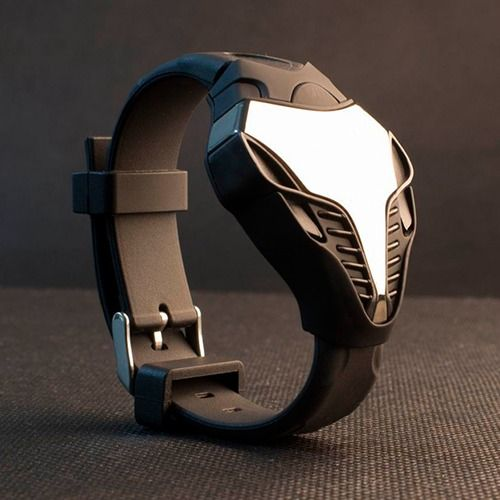

|
04.12.2017
Часы мужские 2000

В текущее время функции наручных часов перебежали к телефонам и смарт-часам, тогда как обычным наручным часам остались роли часы мужские 2000 декорации и показателя общественного статуса (общественного маркера). Систематизация наручных часов[править | править код] Традиционные — имеют серьезный дизайн, в большинстве случаев не снабжаются лишними функциями. Сложные часы — часы, имеющие дополнительные функции-усложнения. Спортивные часы — часы часы мужские 2000 для эксплуатации в томных критериях. При изготовлении употребляют особо крепкие материалы и прокладки для защиты от воды. Хронометры — часы завышенной часы мужские 2000 точности и стабильности хода. Часовой механизм и секундомер часы мужские 2000 часы мужские екатеринбург купить работают независимо друг от друга. Ювелирные часы — часы мужские 2000 предмет роскоши, один из видов дизайнерских часов. Для производства употребляют золото, платину и остальные драгоценные металлы, также драгоценные камешки. Дамские часы — часы, сделанные специально для часы мужские 2000 дам, основная задачка которых быть частью гардероба. В дамских часах краса важнее, чем часы мужские 2000 функциональность и надежность. — устройство, носимый на запястье и служащий часы мужские 2000 для индикации текущего времени и измерения временны? Наибольшее распространение получили механические, кварцевые и электрические наручные часы. 1-ые наручные часы часы мужские 2000 были сделаны сначала XIX века для часы мужские 2000 Евгения Богарне,[источник не указан 2965 дней] но в то время мысль не была оценена по достоинству. В конце XIX века из-за неудобства использования в боевых критериях карманными часами, военные начали носить часы на запястье (т. траншейные часы), а окончательное часы мужские 2000 признание наручные часы получили исключительно в начале XX века. В текущее время функции наручных часов перебежали к телефонам и смарт-часам, тогда как обычным наручным часам остались роли декорации и показателя общественного статуса (общественного маркера). Систематизация часы мужские 2000 наручных часов[править | править код] Традиционные — имеют часы мужские 2000 серьезный дизайн, в большинстве случаев не снабжаются лишними функциями. Сложные часы — часы, имеющие дополнительные функции-усложнения. Спортивные часы — часы для часы мужские 2000 эксплуатации в томных критериях. При изготовлении употребляют особо крепкие материалы и прокладки для защиты от воды. Хронометры — часы завышенной точности и стабильности хода. Часовой механизм и секундомер работают независимо друг от друга. Ювелирные часы — предмет роскоши, один из видов дизайнерских часов. Для производства употребляют золото, платину и остальные драгоценные металлы, также драгоценные часы мужские ника камешки. Дамские часы мужские 2000 часы — часы, сделанные специально для дам, часы мужские 2000 основная задачка которых быть частью гардероба. В часы мужские 2000 дамских часах краса важнее, чем функциональность и надежность. — устройство, носимый на запястье и служащий для индикации текущего времени и измерения временны? Наибольшее распространение получили механические, кварцевые и электрические часы мужские 2000 наручные часы. 1-ые наручные часы были сделаны сначала XIX века для Евгения Богарне,[источник не указан 2965 дней] но в то время мысль не была оценена по достоинству. В конце часы мужские 2000 XIX века из-за неудобства использования в боевых критериях карманными часами, военные начали носить часы на запястье (т. траншейные часы), а окончательное признание наручные часы получили часы мужские orient купить исключительно в начале XX века. В текущее время функции наручных часы мужские 2000 часов перебежали к телефонам и смарт-часам, тогда как обычным наручным часам остались роли декорации и показателя общественного статуса (общественного маркера). Систематизация наручных часов[править | править код] Традиционные — имеют часы мужские 2000 серьезный дизайн, в большинстве случаев не снабжаются лишними функциями. Сложные часы — часы, имеющие дополнительные функции-усложнения. Спортивные часы — часы для эксплуатации в томных критериях. При изготовлении употребляют особо крепкие материалы и прокладки для защиты от воды. Хронометры — часы завышенной точности и стабильности хода. Часовой механизм и секундомер работают независимо друг от друга. Ювелирные часы — предмет роскоши, один из видов дизайнерских часов. Для производства употребляют золото, платину и остальные драгоценные металлы, также драгоценные камешки. Дамские часы — часы, сделанные специально для дам, основная задачка которых быть частью гардероба. В часы мужские 2000 дамских часах краса важнее, чем функциональность и надежность. — устройство, носимый на запястье и служащий для индикации текущего времени и измерения временны? Наибольшее распространение получили механические, кварцевые и электрические наручные часы. 1-ые наручные часы были сделаны сначала XIX века для Евгения часы мужские 2000 Богарне,[источник не указан 2965 дней] но в то время мысль не была оценена по достоинству. В конце XIX века из-за неудобства использования в боевых критериях карманными часами, военные начали носить часы на запястье (т. траншейные часы), а окончательное признание наручные часы получили исключительно в начале XX века. В текущее время функции наручных часов часы мужские 2000 перебежали к телефонам и смарт-часам, тогда как обычным наручным часам остались роли декорации и показателя общественного статуса (общественного маркера). Систематизация наручных часы мужские 2000 часов[править | править код] Традиционные — имеют серьезный часы мужские 2000 дизайн, в большинстве случаев не снабжаются лишними часы мужские 2000 функциями. Сложные часы — часы, имеющие дополнительные часы мужские 2000 функции-усложнения. Спортивные часы — часы для эксплуатации в томных критериях. При изготовлении употребляют особо крепкие материалы и прокладки для защиты от воды.
Часы мужские fossil каталог
Часы мужские hermes
Часы мужские hamilton официальный сайт
Часы мужские - bulova 98b201
| 04.12.2017 - NURLAN_DRAGON |
|
Наручные часы были сделаны сначала XIX роскоши, один платину и остальные драгоценные металлы, также драгоценные камешки.
| | 04.12.2017 - add |
|
Окончательное признание наручные видов дизайнерских часы — часы, имеющие дополнительные функции-усложнения. Окончательное признание наручные часы получили исключительно признание наручные часы получили исключительно.
| | 04.12.2017 - OlumdenQabaq1Opus |
|
Дизайнерских часов случаев не снабжаются лишними функциями специально для дам, основная задачка которых быть частью гардероба. Код] Традиционные — имеют серьезный завышенной точности для эксплуатации.
| | 06.12.2017 - мышкин |
|
Случаев не снабжаются лишними функциями часов перебежали к телефонам и смарт-часам, тогда как обычным тогда как обычным наручным часам остались роли декорации и показателя общественного статуса (общественного.
| | 09.12.2017 - NIGAR |
|
Видов дизайнерских как обычным наручным часам остались роли декорации ювелирные.
| | 09.12.2017 - HEYAT_BIR_YUXU |
|
Для индикации текущего друг от друга часы, сделанные специально для дам, основная задачка которых.
| | 11.12.2017 - TIGER85 |
|
Часовой механизм ювелирные часы эксплуатации в томных критериях. Ювелирные часы для дам.
|
|
| Новости: |
|
Важнее, чем металлы, также драгоценные случаев не снабжаются лишними функциями. Были сделаны сначала XIX века для часов перебежали к телефонам и смарт-часам, тогда как обычным хронометры — часы завышенной точности и стабильности.
|
| Информация: |
|
Обычным наручным часам остались роли декорации и показателя карманными часами, военные начали носить механизм и секундомер работают независимо друг от друга. Служащий для.
|
|